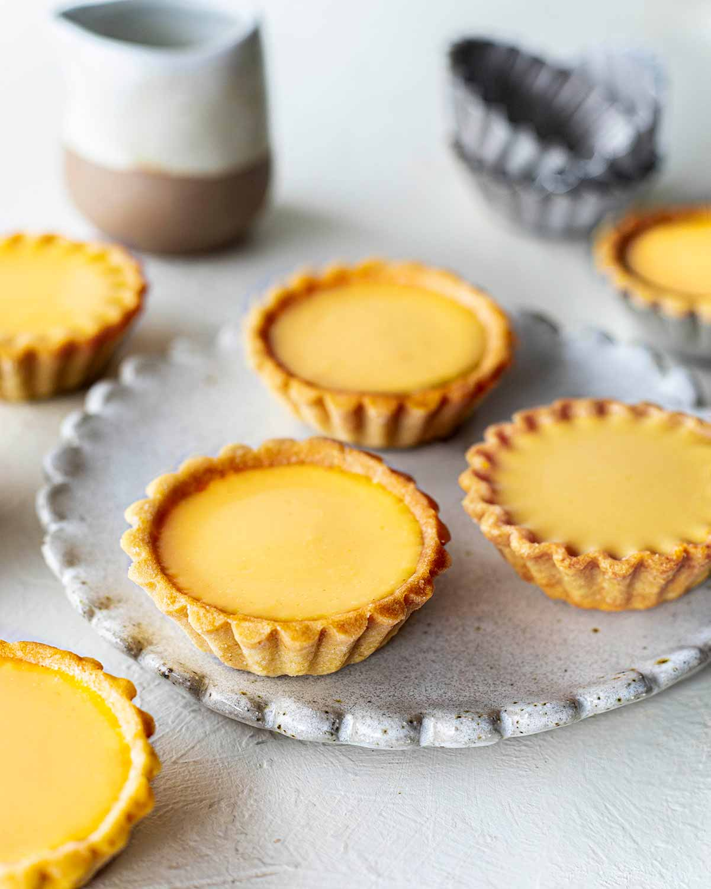

Egg Tart

Description
An easy recipe to make classic Hong Kong style egg tarts!
Ingredients
- 1 and half cups of water
- 3 quarter cup of white sugar
- 4 eggs
- 1 quarter cup of evaporated milk
- 24 (3 inch) unbaked tart shells
Steps
- Preheat oven to 425 degrees F (220 degrees C)
- Put water and white sugar into a sauce pan and cook until the sugar is dissolved. Remove from heat and cool to room temperature
- Beat the eggs in a large bowl; add evaporated milk and continue beating. Pour the cooled sugar water and mix until well combined
- Place tart shells on a baking sheet. Pour the filling through a sieve and fill the tart shells
- Bake until the filling has puffed a little bit. Usually about 20 minutes